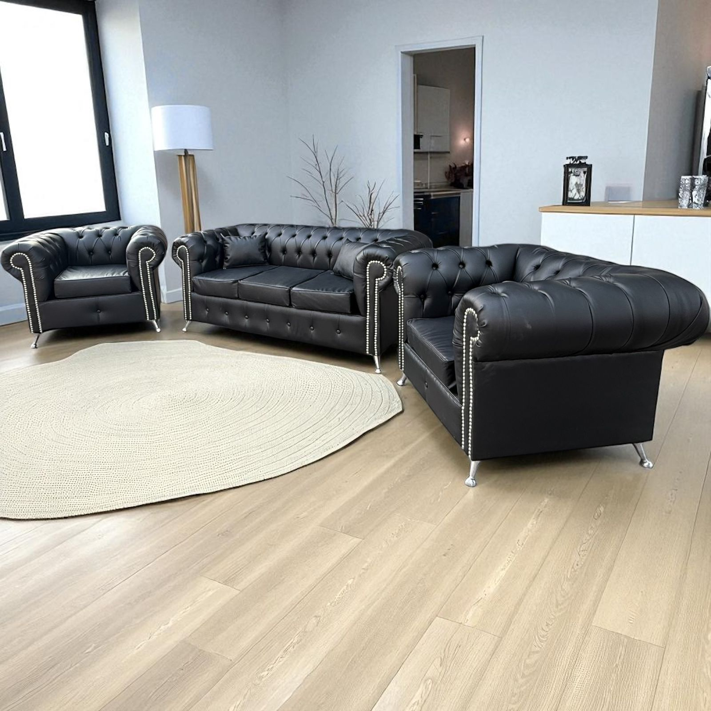
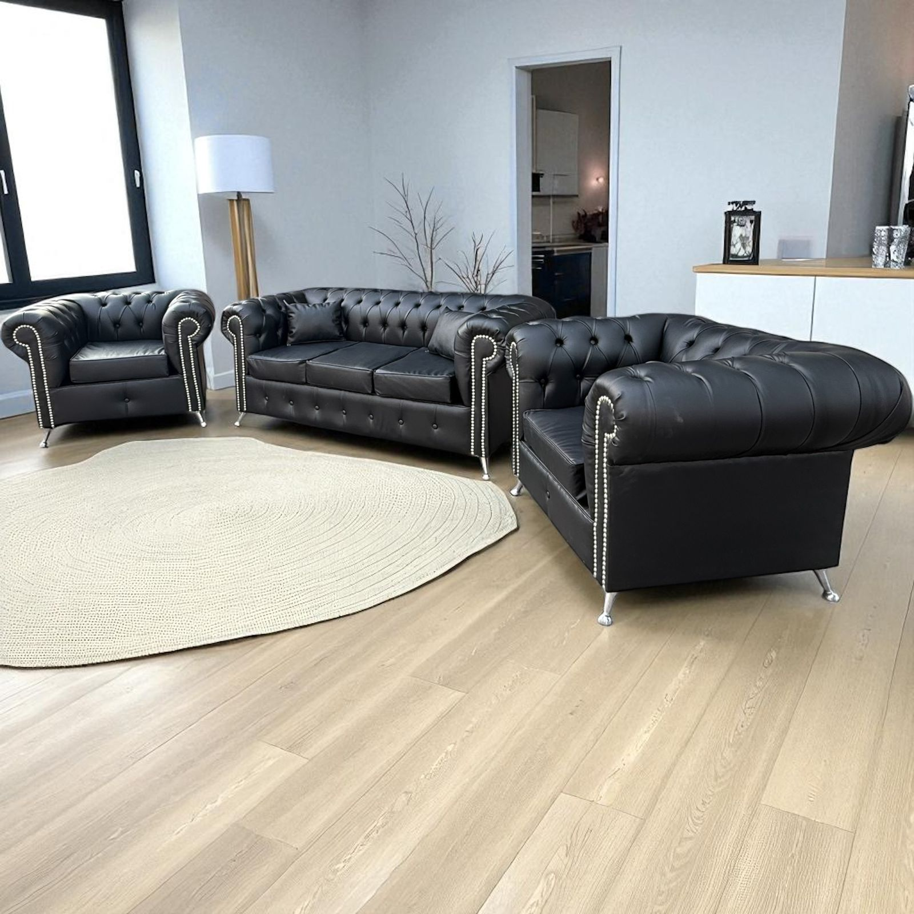

Volver a productos
Juego de Living Chester
Clásico renovado · Personalizable
El Juego de Living Chester propone un estilo clásico reinterpretado con materiales modernos y detalles de calidad. Disponible en telas premium como pana, chenille o talampaya, su estructura con placas de 28 kg asegura firmeza, confort y durabilidad. Las patas de metal aportan una estética contemporánea y elegante.
- Tela a elección: pana, chenille o talampaya.
- Estructura con placas de alta densidad de 28 kg.
- Patas de metal para estilo moderno y resistencia.
Consultá el precio, telas disponibles y formas de pago.
Consultar por WhatsApp